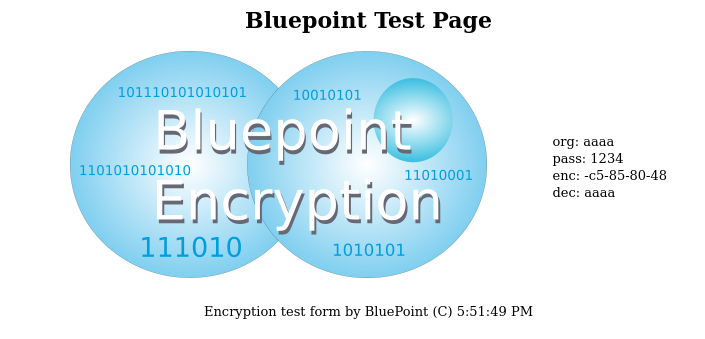

This directory contains the bluepoint algorithm and test suite.
The hs_crypt() family of functions are block handling loops to iterate
over buffers in a consistent manner.
This is bluepoint version 2, and 3, see documentation on differences.
The bluepoint version 3, (the virtual machine version) is under development,
close to completion.
Version 3 might be quantum resistant;

// Run through the pre-defined VM stack
// Pre 1 - do password vector modification
// This modifies the algorythm by virtue of the modified VM steps,
// so the pass is connected to the virtual machine
// Pre 2 - do the regular encryption process
// Pre 3 - execute the static parts of the algorythm
// This section is run in case the modified virtual machine creates
// a short circuit (via unlikely pairs); with this static part, the scramble is
// always strong
PASSLOOP(+)
MIXIT2(+) MIXIT2R(+)
HECTOR(+) FWLOOP(+)
MIXIT2(+) MIXIT2R(+)
PASSLOOP(+) FWLOOP(+)
HECTOR(+) FWLOOP(+)
MIXIT(+) MIXITR(+)
BWLOOP(+) HECTOR(+)
// Done
// Decryption is run in reverse
// Static
// Regular
// Pass vector
Both processes start with a password obfuscation;
petergl@ubunew:~/pgsrc/bluepoint$ ./encrypt_blue2 -p 1111
53ce29d3e9afd899b1a79bf4f1530870755d07d6c6e8619ff1fa
petergl@ubunew:~/pgsrc/bluepoint$ ./encrypt_blue2 -p 1112
50f334cc911a30a90f846b67128595899c3e04744a9bda168c21
petergl@ubunew:~/pgsrc/bluepoint$ ./encrypt_blue2 11111111
c8be9428c5a15c26
petergl@ubunew:~/pgsrc/bluepoint$ ./encrypt_blue2 11111112
7c34888116eb54d8
petergl@ubunew:~/pgsrc/bluepoint$ ./encrypt_blue2 -3 000000
5be500bf0463
petergl@ubunew:~/pgsrc/bluepoint$ ./encrypt_blue2 -3 000001
9523adc84090
Sun 16.Oct.2022 updated bluepoint 3
// EOF